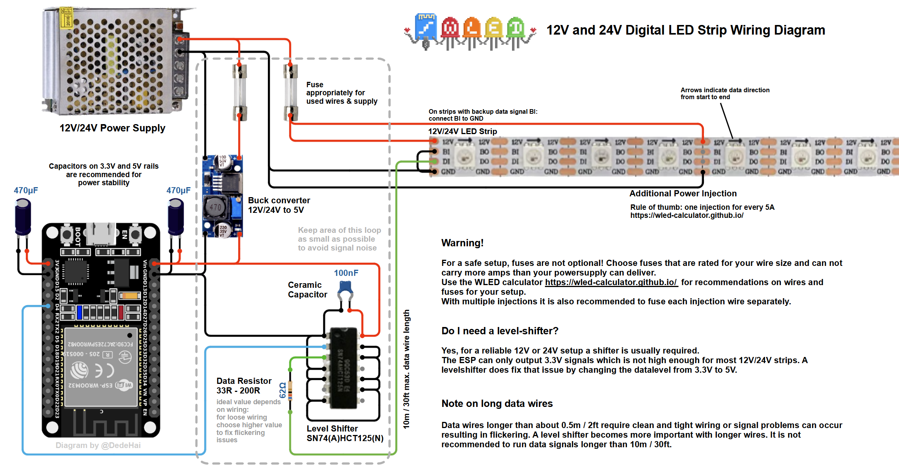
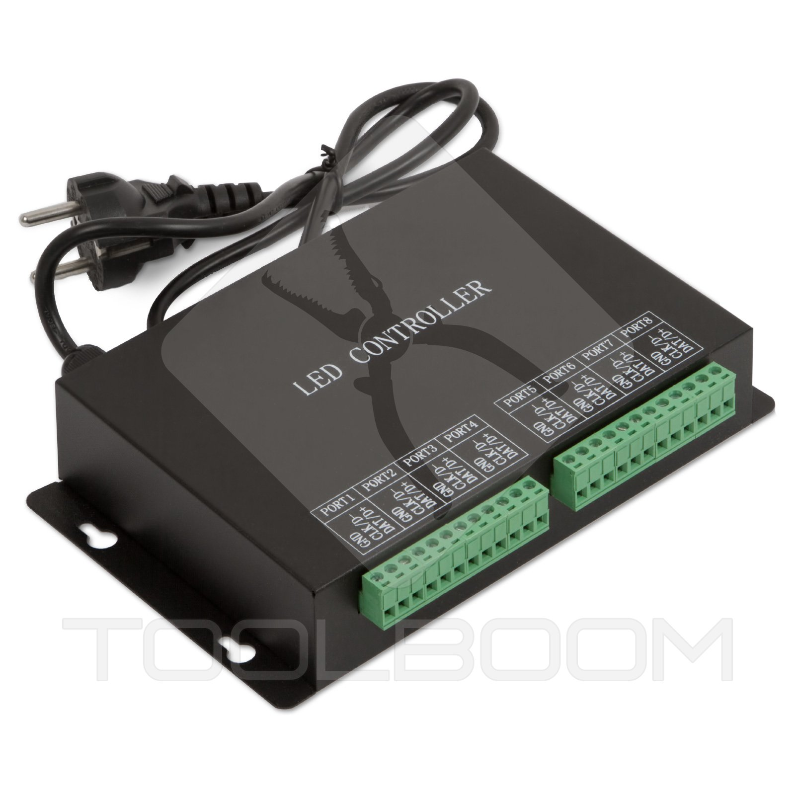
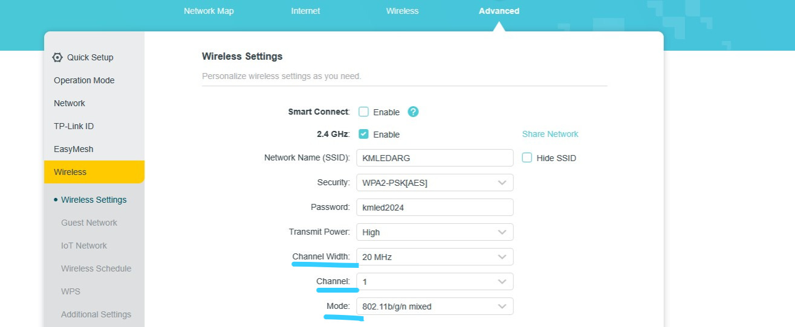

Si quieres controlar tus tiras de LED desde el celular, con efectos increíbles y sin escribir una sola línea de código, necesitas conocer **WLED**. Es un software gratuito (Open Source) diseñado específicamente para microcontroladores ESP8266 y ESP32.
¿Por qué WLED es el mejor?
- **Más de 100 efectos integrados**: Desde fuegos artificiales hasta efectos de audio reactivo.
- **App Móvil**: Disponible para iOS y Android para control total por WiFi.
- **Segmentos**: Puedes dividir una tira larga en varias partes y aplicar efectos distintos a cada una.
- **Sincronización**: Puedes hacer que varios controladores trabajen juntos para que toda tu casa cambie de color a la vez.
¿Cómo se instala? (En 3 pasos)
Ya no hace falta usar programas complicados. Ahora se hace desde el navegador:
- Conecta tu ESP32 / ESP8266 a la computadora por USB.
- Entra en install.wled.me usando Google Chrome o Edge.
- Dale a "Install" y sigue los pasos. ¡En 2 minutos estarás listo!
Hardware recomendado y Controladores KM-LED
Para proyectos DIY, recomendamos el **ESP32 DevKit V1**, mucho más potente y estable que el antiguo ESP8266.
Configuración de Pines para Placas Oficiales KM-LED:
Al configurar WLED en Config > LED Preferences, utiliza estos pines exactos para que tus salidas funcionen correctamente:
- ⚡ Controlador de 2 Salidas: Asigna los canales a GPIO 2 y GPIO 4.
- ⚡ Controlador de 4 Salidas: Asigna los canales a GPIO 2, GPIO 4, GPIO 18 y GPIO 19. El botón físico se configura en el GPIO 23.
Esquema de Conexión Típico
Este es el circuito estándar recomendado por la comunidad de WLED para instalaciones de 12V y 24V. Incluye protecciones (fusibles), filtrado (capacitores) y el Level Shifter:

Créditos del diagrama: @DedeHai - Referencia técnica para WLED.
Configuración Inicial: Primeros Pasos
Una vez instalado el software en tu ESP32, es momento de conectarlo a tu red. Aquí los detalles clave:
📶 El Punto de Acceso (AP)
Si no configuraste el Wi-Fi durante la instalación, el controlador creará su propia red:
- **SSID:** `WLED-AP`
- **Clave:**
wled1234
⚙️ Ajustes Básicos (App)
Entra a **Config > LED Preferences** y revisa estos puntos críticos:
- **LED Count:** Pon el número exacto de píxeles que tienes.
- **Maximum Current:** WLED trae activado por defecto un limitador de **850mA**. Si tu fuente es de 10A, ¡cámbialo! Si no lo haces, tus LEDs se verán tenues o amarillentos al subir el brillo.
- **Color Order:** Si el rojo se ve verde, cámbialo a `GRB` (común en WS2812B) o `RGB`.
💡 Tip del Experto: En la sección de **User Interface**, ponle un nombre a tu controlador (ej: "Living" o "Habitación"). Esto te permitirá entrar escribiendo `http://living.local` en el navegador sin tener que recordar la IP.
IP Estática: Estabilidad Total
Por defecto, tu router le asigna una IP "prestada" al ESP32 (DHCP). El problema es que esta IP puede cambiar si el router se reinicia. Para una instalación profesional, **siempre configura una IP fija**:
- **Acceso Garantizado**: Sabrás que tu controlador siempre está en la misma dirección (ej: `192.168.1.100`).
- **Integración**: Si usas software como **Home Assistant**, **xLights** o **Madrix**, necesitas que la IP nunca cambie para no perder la conexión.
- **Velocidad**: El controlador se conecta más rápido a la red al no tener que negociar una dirección con el router.
Se configura en **Config > WiFi Setup > Static IP**. Asegúrate de elegir una IP que esté fuera del rango que el router asigna automáticamente para evitar conflictos.
Dominando la Interfaz: Segmentos, Presets y Playlists
WLED no es solo encender y apagar. La verdadera potencia está en cómo organizas tus LEDs para crear escenas complejas.
Segmentos
Imagina que tienes una tira de 300 LEDs. Con **Segmentos**, puedes decirle a WLED que los LEDs 0 al 100 son "Segmento 0" y los 101 al 300 son "Segmento 1".
**¿Para qué sirve?** Puedes poner un efecto de fuego en una parte y un color fijo en otra, ¡todo con el mismo controlador!
Presets
Un **Preset** es una "foto" de cómo están tus LEDs en ese momento. Guarda los colores, la velocidad, el brillo y hasta la división de segmentos.
**Tip:** Crea un preset llamado "Cine" con brillo bajo y otro "Fiesta" con efectos rápidos para cambiarlos con un solo click.
Playlists
Las **Playlists** te permiten encadenar presets. Puedes decir: "Ejecuta el Preset 1 por 10 segundos, luego el Preset 2 por 30 segundos, y repite".
**Uso Pro:** Ideal para vidrieras o decoración navideña donde quieres que los efectos cambien solos automáticamente.
🛠️ Paso a Paso: Configurando tus Segmentos
Configurar segmentos es muy simple si sigues este orden:
Ve a la pestaña **Segments** en la interfaz principal de WLED.
Edita el **Segmento 0**. Define dónde empieza (ej: 0) y dónde termina (ej: 150). Haz click en la tilde (Check) para guardar.
Haz click en **+ Add Segment** para crear el siguiente. Define el inicio (ej: 150) y el final (ej: 300).
¡Listo! Ahora verás dos rectángulos. **Selecciona uno** (verás que se resalta) y ve a la pestaña de **Effects**. El efecto que elijas se aplicará solo a esa parte de la tira.
**Importante:** No olvides guardar esta configuración como un **Preset** (Punto 2 de arriba), de lo contrario, al apagar y encender el controlador, los segmentos podrían borrarse.
Controladores Ethernet (RJ45): Estabilidad Pro
Para instalaciones grandes o profesionales (como salones de eventos o fachadas), el WiFi puede quedarse corto. Aquí es donde entran los controladores con puerto **RJ45 (Ethernet)**.

Ejemplo de controlador profesional con entrada de red para máxima estabilidad.
⚠️ Un detalle importante: El Costo
Si bien los controladores por cable (Art-Net o sACN) ofrecen una estabilidad absoluta y pueden manejar miles de LEDs sin lag, **su precio es significativamente más alto**. Estamos hablando de equipos profesionales que pueden costar entre 5 y 10 veces más que un módulo ESP32 convencional.
- **Ventaja**: Cero interferencias, mayor velocidad de refresco (FPS) y mayor cantidad de universos DMX.
- **Desventaja**: El costo elevado y la necesidad de tirar cableado estructurado hasta cada controlador.
Protocolos de Red: Art-Net y sACN (E1.31)
Cuando pasamos del control por WiFi a instalaciones profesionales con miles de píxeles, dejamos de usar la "interfaz web" y pasamos a usar protocolos de datos en tiempo real.
Art-Net
Es el protocolo más universal. Permite enviar universos DMX a través de redes estándar. Casi cualquier software de iluminación profesional como **Resolume, Madrix u Onyx** lo soporta nativamente.
sACN (E1.31)
Es el estándar moderno de la industria. Su gran ventaja es que usa "Multicast", lo que lo hace mucho más eficiente en instalaciones gigantes, evitando que el router se sature con datos innecesarios.
¿WLED los soporta?
**¡Totalmente!** WLED puede recibir datos por ambos protocolos. Esto te permite usar un simple ESP32 como un nodo DMX inalámbrico para mapear tus LEDs desde programas profesionales como **xLights** o **Resolume Arena**.
Integración con Home Assistant
WLED se lleva de maravilla con la domótica. Si usas **Home Assistant**, la integración es automática y te abre un mundo de posibilidades.
- 🤖 **Auto-Descubrimiento:** Ni bien conectas un WLED a tu red, Home Assistant te avisará que encontró un nuevo dispositivo. Solo tienes que darle a "Configurar" y listo.
- 🏠 **Automatizaciones:** Puedes hacer que los LEDs se enciendan cuando llegas a casa, que cambien a rojo si la alarma se dispara, o que parpadeen si alguien toca el timbre.
- 📊 **Control Centralizado:** Podrás controlar el brillo, los colores y los presets de todos tus WLEDs desde un solo panel junto al resto de tus luces y electrodomésticos.
Control por Voz: WLED y Alexa
¿Quieres decirle a tu casa que encienda las luces? WLED incluye una función de **emulación** que permite que Alexa lo reconozca como si fuera una lámpara inteligente de Philips Hue o Belkin Wemo.
Cómo configurarlo rápido:
- Entra a **Config > Sync Interfaces**.
- Busca la sección **Alexa** y marca la casilla "Emulate Alexa device".
- Ponle un nombre (ej: "Tira Led"). Este será el nombre que usarás para hablarle a Alexa.
- Dile a tu parlante: *"Alexa, busca dispositivos"* o búscalo manualmente desde la App de Alexa.
**Nota:** No necesitas instalar ningún Skill de Alexa ni crear cuentas externas. La comunicación es local y directa entre tu ESP32 y el dispositivo Echo.
El Botón Físico: Control Manual
No siempre tenemos el celular a mano. WLED permite conectar un botón físico (Push Button) para controlar tu tira de forma manual y rápida.
Cómo conectarlo y usarlo:
- 🔌 Conexión: Conecta un pulsador entre un pin **GPIO** (normalmente el GPIO 0 o el GPIO 2) y **GND**. *(Nota: Si usas el controlador KM-LED de 4 salidas, el pin correcto es el **GPIO 23**)*.
-
🖱️ Acciones:
- **Click simple:** Enciende/Apaga.
- **Doble click:** Cambia al siguiente Preset.
- **Click largo:** Sube/Baja el brillo. - 📡 Interfaz digital I²S
- 🔇 Muy bajo nivel de ruido
- ⚡ Funciona solo con ESP32
- 🎯 Alta precisión para efectos
- 💰 Económico (~$5 USD)
- 📡 Interfaz analógica (ADC)
- 🔊 Más susceptible al ruido
- ✔️ Compatible ESP8266/ESP32
- ⚙️ Menor precisión en efectos
- 💰 Muy barato pero limitado
- 🔊 Squelch: Ajusta el umbral mínimo de ruido para que los LEDs no se muevan con el ruido del ambiente. Subilo si tu entorno tiene mucho ruido de fondo.
- 📈 Gain: Si los efectos se ven apagados, subí la ganancia. Si se saturan y siempre van al máximo, bajala.
- 📍 Posición del micrófono: Para el GEQ, colocalo cerca de las bocinas para captar bien los agudos y medios. Para detectar bajos, puede estar más lejos.
- 🔁 UDP Sound Sync: ¿Tenés varios ESP32? WLED permite que uno sea el "master" con el micrófono y transmita los datos de audio a todos los otros por WiFi. ¡Todos sincronizan sin necesitar micrófono propio!
- **Cercanía Inicial:** La antena del ESP32 es pequeña. Al configurar el `WLED-AP` por primera vez, asegúrate de estar a menos de 2 metros del módulo.
- **Router Dedicado (Recomendado):** Usar un router WiFi exclusivo para los LEDs garantiza que la señal fluya sin interferencias del tráfico de internet de la casa.
- **Ocultar el SSID:** Una vez configurado, oculta la red para evitar intentos de conexión externos que puedan causar micro-cortes en los efectos.
**Nota Técnica**: WLED activa automáticamente la **resistencia Pull-Up interna** del microcontrolador. Por eso no hace falta agregar una resistencia física externa; solo conectamos el pulsador directo a Tierra (GND).
**Tip Pro:** Puedes configurar qué hace cada pulsación en **Config > LED Preferences > Button Setup**. ¡Incluso puedes usarlo para disparar una Playlist entera!
Sound Reactive: Tus LEDs al Ritmo de la Música
Una de las funciones más impresionantes que ofrece el ecosistema WLED es la capacidad de hacer que tus tiras de LED reaccionen en tiempo real al sonido del ambiente. Imagina un ecualizador visual gigante en la pared de tu local, o luces que pulsan al ritmo de la música en una fiesta. Eso es **Sound Reactive (SR)** y está integrado directamente en WLED.
📌 ¿Es una función separada?
Originalmente, Sound Reactive era un fork (versión modificada) independiente de WLED. A partir de WLED 0.14 y versiones posteriores, el análisis de audio fue integrado oficialmente como un UserMod dentro del propio WLED. Esto significa que si instalás la versión más nueva desde install.wled.me, ya tenés esta función disponible. Solo necesitás el hardware correcto.
🎙️ Hardware Necesario: El Micrófono
Para que WLED pueda "escuchar", necesitás conectarle un micrófono digital al ESP32. El más recomendado por la comunidad es el módulo INMP441, un micrófono digital I²S de alta calidad y bajo ruido.
✅ INMP441 (Recomendado)
⚠️ MAX9814 / KY-038 (Analógico)
🔌 Diagrama de Conexión: INMP441 → ESP32
La conexión del micrófono I²S usa solo 5 cables. El pin L/R del módulo siempre va conectado a GND para indicarle que usaremos el canal izquierdo del estéreo.
Estos pines son los valores por defecto en WLED-SR. Podés cambiarlos en la configuración si tu placa los tiene ocupados. El capacitor de 100nF en la línea de 3.3V filtra el ruido de la alimentación y mejora notablemente la calidad de la captura de audio.
| INMP441 | ESP32 | Función |
|---|---|---|
| VDD | 3.3V | Alimentación |
| GND | GND | Tierra |
| WS (LRCK) | GPIO 32 | Selección L/R canal |
| SCK | GPIO 15 | Reloj del bus I²S |
| SD | GPIO 33 | Datos de audio (serial) |
| L/R | GND | Fijar en canal izquierdo |
⚙️ Cómo Activarlo en WLED
Entrá a la interfaz web de tu WLED y andá a Config → Audio (o Usermod → AudioReactive en versiones anteriores).
Seleccioná el tipo de micrófono. Para el INMP441 elegí I2S / Generic I2S. Para el MAX9814 o KY-038 elegí Analog / Generic (ADC).
Verificá que los pines (I2S SD, I2S WS, I2S SCK) coincidan con tu cableado (por defecto: 33, 32, 15).
Guardá y reiniciá. Ahora en la pestaña de Effects vas a ver que los efectos marcados con 🎙️ o un ícono de nota musical son los que responden al sonido.
🎆 Efectos Sound Reactive más populares
🌊 Ripple
Crea ondas que se expanden desde el centro con cada golpe de bajo. Ideal para música electrónica.
🎚️ GEQ (Graphic EQ)
Muestra un ecualizador gráfico de 16 bandas en tiempo real. El efecto más vistoso para barras de LEDs.
⚡ Pixels
Puntos de colores que "saltan" al ritmo. Muy caótico y enérgico, perfecto para fiestas.
🔥 Gravimeter
Barras que suben con el volumen y caen lentamente por "gravedad". Un clásico de los VU-meters.
💥 Blurz
Destellos difuminados que explotan con cada beat. Muy efectivo con colores degradados.
🌈 DJLight
Simula una barra de DJ con colores que cambian con frecuencias distintas. Muy pedido para boliches.
🎛️ Tips de Calibración
Infraestructura WiFi: Consejos Pro
🚀 Logra una conexión infalible
Para instalaciones profesionales o con varios controladores, **el uso de un router dedicado no es opcional, es una necesidad.** Aquí cómo optimizar tu red:

Tips para ayudar a la estabilidad en los módulos